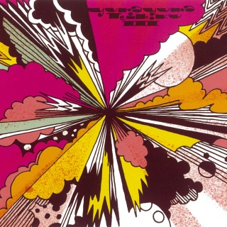
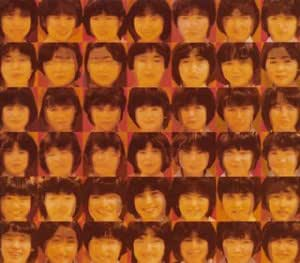
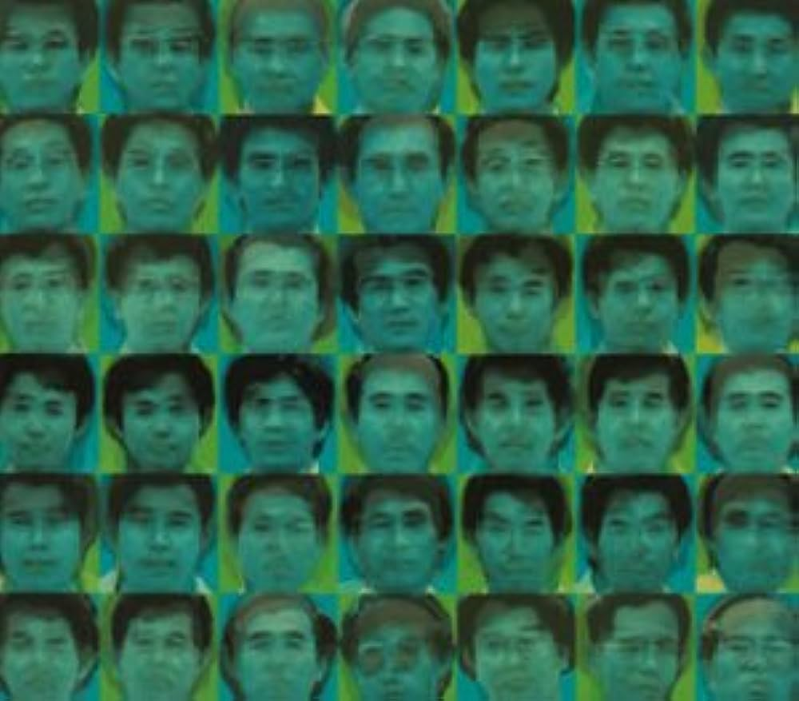
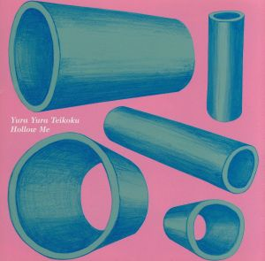

ゆらゆら帝国について
ゆらゆら帝国（ゆらゆらていこく）は、日本のロックバンド。
1989年に結成され、2010年に解散した。略称は「ゆら帝」。
ライブにおける特徴として、MCがほとんどない、
アンコールがないといったことが挙げられる。
坂本はギターを弾きながら体を激しく動かし飛び上がることもある一方で、
亀川千代（ベース）はほぼ直立不動を保ち、大振りなアクションはまったく行わない。
MCは、坂本が「どうも」「あと1曲です」「さよなら」「ありがと」「まぁまぁまぁ」などと言うだけで、
まとまった事を喋ることはほとんどなく、
他の二人は全く喋らず、
観客からの掛け声に応じることも一切しない。
国内のフェスの参加のほか、
2005年のレーベル移籍後はヨーロッパやアメリカでのライブ敢行や台湾のフェス出演など、
日本国外での活動も活発に行っていた。
2010年3月31日、ウェブサイトにて解散を発表し、
その理由に｢完全にできあがってしまった｣ことを挙げた。
引用：Wikipedia
美しく妖しいサイケデリックなサウンドを奏で、
日本のロックシーンで強い影響力を持つオルタナティブロックバンド。
メンバーは坂本慎太郎（Vo/G）、亀川千代（B）、柴田一郎（Dr）の3人。
1989年に結成、初期は1960年代ガレージロック的なサウンドを鳴らしていたが、
実験的なアプローチを取り入れながら唯一無二のミニマルミュージックにたどり着く。
浮遊感の強い夢幻的なサウンドで空虚な時代の流れを描いた
名作『空洞です』（2007年）を残し、2010年に解散した。
引用：AppleMusic
以上の説明を見ての通り、ゆらゆら帝国はかつて伝説を残し他バンドであるが、
初見時にはその実態は謎に包まれている。
私も初めて知ったときは不思議なバンドだと
感じたが、今では一番好きなバンドとなっている。
このサイトでは、彼らの楽曲の中から、閲覧者諸君の直感で好きな曲を選んでもらい、
きっと好きになるであろうゆらゆら帝国のアルバムを紹介し、
この深い沼へと引きずり込むことを目的としている。
まずはこの曲から聞いてほしい。
次はこれ
最後はこれ
1番目が好きな君にはこのアルバムだ！
ゆらゆら帝国Ⅲ
直球でバンド感の強いロックが好きなあなたにはこれ。
個人的にはこのアルバムが最も聴きやすく、
最初に聞くにはおすすめのアルバムだ。
他におすすめな曲：昆虫ロック、すべるバー
2番目ならこれ！
ゆらゆら帝国のめまい
叙情的でしっとり美しい曲が好きなあなたにはこれ。
空虚な感じがするけど、どこか温かい。
そんな魅力に包まれるだろう。
他におすすめな曲：星になれた、冷たいギフト
3番目ならこれ！
ゆらゆら帝国のしびれ
前衛的で、難し気な音楽が好きなあなたにはこれ。
ゆらゆら帝国は実験的な音楽も沢山出しているが、
どこかハマってしまうのだ。
他におすすめな曲：誰だっけ、タコ物語
しかしゆらゆら帝国の魅力はこれだけではない。 もしあなたがこれらの曲からゆらゆら帝国にはまり、 ゆらゆら帝国の音楽性も、バンドの遍歴も大体知ってきた というのならば、最後にこのアルバム、特にラストの 『空洞です』をおすすめする。 ぜひこの曲に、ゆらゆら帝国に引き込まれてほしい。 わかってほしい。
